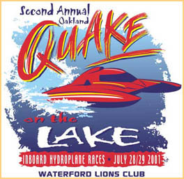

|
 |
By all accounts, the inaugural Quake On The Lake was
a great success!
This year we'll have even more boats in the 1.5, 2.5 and 5 Litre classes, and we've added the Jersey Speed Skiffs and Grand Prix Hydroplanes to the schedule! There will be approximately 15 heats each day, including a Governor's Cup Race. |
|
Admission to the recreation area is $4 per vehicle, and admission to
the spectator area is $5 per person age 13 and up (12 and under are free).
Gates open at 9am, and the pits are open to the public until 11am.
The Pontiac Lake Recreation Area is located approximately one mile North of M-59 and N. Williams Lake Road (enter from Gale Road). It is immediately West of the Pontiac airport. Click here for a map of the area, and here for parking detail. |
Art Asbury inducted into the Pioneers of Powerboating Hall Of Fame
|
Quake logo image copyright by the artist (if you know the name please tell me!)
All contents Copyright 2001 Brian Reed, except where noted. All Rights Reserved.
|